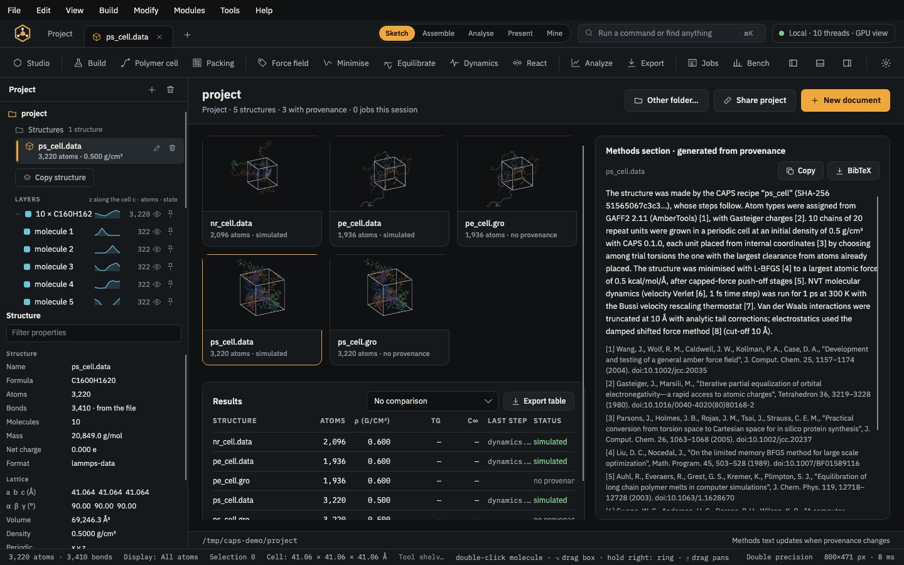

Analyse & export · module 25
Study table
Collect results from several structures, batch runs and files in one table, add columns from formulas, chart one column against another, and fit models of a property: regression, PLS, genetic function approximation and a small neural network with cross-validation, or clusters and discriminants of the rows.
Open it Modules›Analysis›Study table…
- You start with
- The open structure and its Analyze results, Batch results, a table from the Reader, a CSV file or rows pasted from a spreadsheet.
- You get
- A study table (saved as a CAPS study file, or exported as CSV or an SD file), a chart with a fit, and statistics and model reports.
chains <= 2 hides the four cells with four chains (10 of 14 rows shown), and the density cells are coloured by value.Step by step
Add rows
Under Rows from: The open structure (atoms, mass, density, cell and the Analyze results shown now), Batch results, Reader table (a LAMMPS log, an xvg, a CSV), CSV file… or Paste. Columns are matched by name across sources, and a row that came from a file opens it with ↗.
Add formula columns
Under New column, a name and a formula over the columns to its left, such as
1000 / [Tg (K)]orln(D); names with spaces go in square brackets. Leave the formula blank to type values. The constants pi, e, R, kB and NA are known.Order, filter and colour
Type columns in priority order and press Order; a leading
-sorts that column descending, and rows without a number go last. Filter shows only the rows that meet a condition such asTg > 300 and density < 1.2. Colour cells by shades the cells of one column by value.The filter hides rows from the sheet and from the SD file; the chart and the statistics still use every row.
Chart a column against another
Pick Across (x) and Up (y), and a fit model under the chart. Histogram of the x column counts the rows in bins, with the Freedman–Diaconis, Scott or Sturges rule for the width.
Statistics and models
Choose a mode under Statistics: describe each column, Pearson correlations, regression of y (the chart's Up column) on the ticked columns, principal components, stepwise regression, PLS, genetic function approximation (GFA), a neural network with one hidden layer, Ward clusters of the rows, or discriminant analysis with the Up column as classes.
The models report q² by cross-validation (leave-one-out up to 30 rows, else 10-fold) and ten fits on shuffled y. Rows missing a value in a chosen column are left out.
Add descriptors of the rows' structures adds graph indices (Wiener, χ, κ, Balaban J), H-bond counts, van der Waals volume and area and charged partial surface areas of each row's structure as columns.
Save or export
Save… keeps the table to open again, Export CSV… writes it as text, and Export SD file… writes the rows shown that have a structure, one record each, with every column as an SD data item.
The same without the Studio
Every Studio page calls the same core as the caps command and the caps Python package, so a step you clicked can be repeated in a script.
caps table results.csv --sort 'Tg,-density' --hist density --rule fd
caps qspr descriptors --smiles 'CCO;CC(C)O' --csv descriptors.csv
caps qspr model results.csv --y Tg --x density,ced --method pls --folds 10 --randomise 10import csv
import caps
rows = list(csv.DictReader(open("results.csv")))
y = [float(r["Tg"]) for r in rows]
x = {c: [float(r[c]) for r in rows] for c in ("density", "ced")}
m = caps.qspr_model(y, x, method="pls", folds=10, randomise=10)
print(m["equation"], m["r2"], m["q2"])Where to go next

Analyse & exportProject & methodsA results table for every structure and a methods section with BibTeX, written from provenance. Analyse & exportExportLAMMPS, GROMACS, DL_POLY 4, AMBER/OpenMM and moltemplate decks, checked before they are written.
Analyse & exportExportLAMMPS, GROMACS, DL_POLY 4, AMBER/OpenMM and moltemplate decks, checked before they are written.